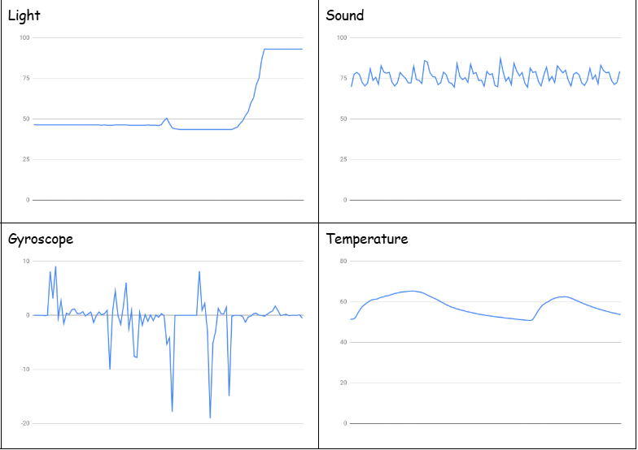

Home
Portfolio
About Me
My Portfolio Page
Magic 8ball Prod 1.1.9


The magic 8ball needs a question and the user would input an answer; yes, no, maybe, or maybe not.
We used a bunch of comments to display the letters written inside of the 8ball and had to change the
background for every answer the user gave us.
Star Catchers Prod 1.1.5
This is a game where you have to move the box around to collect as many stars as you can in 30 seconds.
If the timer goes to 0, the game stops.
Dino E-Card Prod 1.3.1


We made an e-card for a children's hospital. The card is dinosaur-themed with a pun saying “You’re my little dino-mite!”
The maze is a game where the baby dino has to find its mom.
Phishy in the Tank Prod 2.1.6


We discover the emails of the employees where they talk about information about the company. We saw many errors of discrete information given to us
and we had to figure out the problem.
This is my Scratch Project
The user tries their best to jump over potions and if they don't, the game is OVER! The yellow minion turns purple and you would have to restart.
Creating a Command Line GUI Prod 2.2.7


We planned, designed, and created a graphical user interface (GUI) that utilizes command-line tools we have learned. The GUI simplifies the process of using the
command line tools and present the results obtained.
Prod 3.1.6

This is our 3.1.6 project where we had to figure out where the Rover was located based on descriptions of the Alien Planet. Since the temperatures were smooth,
the chirping noises were constant and there was little to no wind we used the process of elimination to conclude that the Rover was in the Marsh Lands.
Prod 3.2.4.

This is our 3.2.4 project where we had to graph the trend in Honey production and Operation facilities for all the States. The data spans from 2002 to 2022.
We were able to figure out the smallest, the middle, and the highest honey producers using averages from our data. We concluded that honey production has increased as operational facilities have increased.